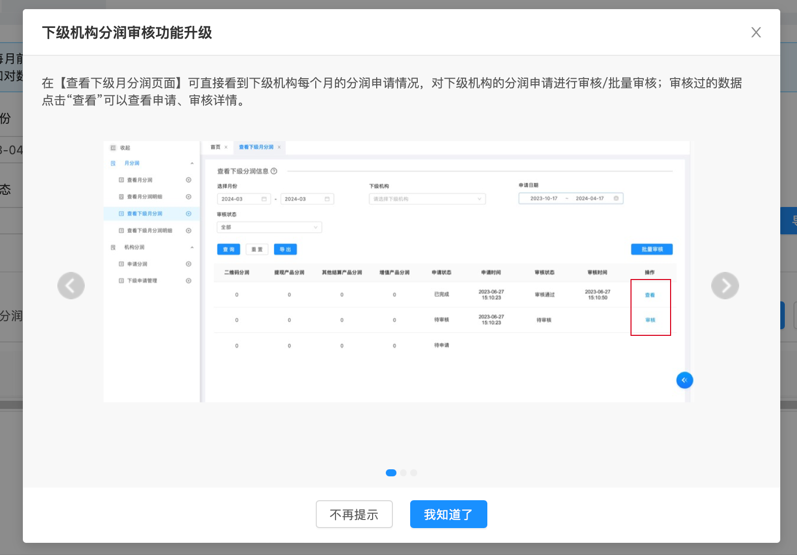

查看月分润×
每月前 7 个工作日内发布分润数据，明细数据以每月分润发布后查询结果为准，如对分润数据有疑问请发送邮件至 xx@xx.com 核查。
~
1应发分润金额：1.76
2待发分润金额：0.00
额外收取下级分润数据展示：点击每月「查看额外收取分润」按钮，从右侧滑出抽屉展示。当前机构配置为 不允许（默认），抽屉中仅展示额外收取后的实际到手金额；若配置为允许，则同屏展示额外收取前金额、额外收取金额、我的应分额三列。配置入口：顶部导航「账号管理」→ 左侧「下级机构管理」→ 编辑。
| 序号 | 分润月份 | 申请时间 | 分润状态 | 实发金额 | 申请状态 | 银行卡分润 | 二维码分润 | 提现产品分润 | 其他结算产品分润 | 增值产品分润 | 分润合计 | 操作 |
|---|---|---|---|---|---|---|---|---|---|---|---|---|
| 1 | 2024-04 | 2024-05-08 10:12:30 | 已发布 | -- | 待审核 | 0.30 | 0.40 | 0.20 | 0.20 | 0.86 | 1.96 | |
| 2 | 2024-03 | -- | 已发布 | -- | 待申请 | 0.27 | 0.36 | 0.18 | 0.18 | 0.77 | 1.76 | |
| 3 | 2024-02 | 2024-03-05 15:10:23 | 已发布 | -- | 待修改 | 0.25 | 0.32 | 0.16 | 0.16 | 0.73 | 1.62 | |
| 4 | 2024-01 | 2024-02-06 10:02:11 | 已发布 | 1.40 | 已完成 | 0.23 | 0.31 | 0.14 | 0.14 | 0.67 | 1.49 |
共 4 条
分润合计列位置
分润合计位于「增值产品分润」之后；列表字段与明细页口径保持一致。
分润合计位于「增值产品分润」之后；列表字段与明细页口径保持一致。
申请入口移至筛选区与【查询】并排
【申请分润】不再放在操作列，移到筛选区与【查询】【重置】并排（筛选条件右侧的按钮区）；操作列只保留「查看额外收取分润」。申请入口仍只有这一处，列表内不再重复放该按钮。该按钮仍受「允许下级申请分润」开关控制（开关为「关」时整体隐藏，不再在操作列留「--」占位）。
【申请分润】不再放在操作列，移到筛选区与【查询】【重置】并排（筛选条件右侧的按钮区）；操作列只保留「查看额外收取分润」。申请入口仍只有这一处，列表内不再重复放该按钮。该按钮仍受「允许下级申请分润」开关控制（开关为「关」时整体隐藏，不再在操作列留「--」占位）。
申请金额取值
申请金额等于分润合计，不支持手工修改。
申请金额等于分润合计，不支持手工修改。
分润列口径＝额外收取后
本页五个产品分润列（银行卡分润、二维码分润、提现产品分润、其他结算产品分润、增值产品分润）与「分润合计」一并展示上级额外收取后、本级机构实际应得的金额，五个细项之和等于「分润合计」。抽屉与导出 Sheet 的细项维度与这五列一致（产品维度 5 项），不按交易维度（扫码交易、刷卡交易、订单分账、余额分账）拆分。额外收取前的金额不在本列表展示：仅当「是否允许查看额外收取分润」开关为「允许」时，点行内「查看额外收取分润」在抽屉内查看（抽屉含额外收取前金额、额外收取金额、我的应分额三列）；开关为「不允许」时该入口与三列一并隐藏，只能看到额外收取后的金额。同一月份抽屉内的五个细项之和 = 该月「分润合计」（2024-03 行：0.27 + 0.36 + 0.18 + 0.18 + 0.77 = 1.76）。抽屉内每一细项的「我的应分额」与该月列表的对应列逐项同值（抽屉的「银行卡分润」对应列表「银行卡分润」列，依此类推），且「额外收取前金额 − 额外收取金额（上级抽取）= 我的应分额」；示例按「统一收取」10% 折算（额外收取前金额保留两位小数后计算额外收取金额），「其他结算产品分润」无额外收取比例输入框、额外收取金额恒为 0，故其额外收取前金额与我的应分额同值。抽屉「合计」行与该月列表「分润合计」同值。
本页五个产品分润列（银行卡分润、二维码分润、提现产品分润、其他结算产品分润、增值产品分润）与「分润合计」一并展示上级额外收取后、本级机构实际应得的金额，五个细项之和等于「分润合计」。抽屉与导出 Sheet 的细项维度与这五列一致（产品维度 5 项），不按交易维度（扫码交易、刷卡交易、订单分账、余额分账）拆分。额外收取前的金额不在本列表展示：仅当「是否允许查看额外收取分润」开关为「允许」时，点行内「查看额外收取分润」在抽屉内查看（抽屉含额外收取前金额、额外收取金额、我的应分额三列）；开关为「不允许」时该入口与三列一并隐藏，只能看到额外收取后的金额。同一月份抽屉内的五个细项之和 = 该月「分润合计」（2024-03 行：0.27 + 0.36 + 0.18 + 0.18 + 0.77 = 1.76）。抽屉内每一细项的「我的应分额」与该月列表的对应列逐项同值（抽屉的「银行卡分润」对应列表「银行卡分润」列，依此类推），且「额外收取前金额 − 额外收取金额（上级抽取）= 我的应分额」；示例按「统一收取」10% 折算（额外收取前金额保留两位小数后计算额外收取金额），「其他结算产品分润」无额外收取比例输入框、额外收取金额恒为 0，故其额外收取前金额与我的应分额同值。抽屉「合计」行与该月列表「分润合计」同值。
本页保持
本页「实发金额」与明细页「实发分润」为同一含义，字段名随各页现状保留。
本页「实发金额」与明细页「实发分润」为同一含义，字段名随各页现状保留。
筛选条件新增
筛选条件增加「签约主体」「业务类型」两项；「申请状态」枚举为 待申请 / 待审核 / 待修改 / 已完成。
筛选条件增加「签约主体」「业务类型」两项；「申请状态」枚举为 待申请 / 待审核 / 待修改 / 已完成。
字段隐藏
本页不展示「开票金额」「扣除税点」两列；未产生实发金额的月份展示「--」。
本页不展示「开票金额」「扣除税点」两列；未产生实发金额的月份展示「--」。
申请与查看弹窗
【申请分润】以弹窗形式呈现（已选分润合计、总计 x 条、表头全选、未勾选时【提交申请】置灰）；查看详情弹窗按状态反显，已完成追加「扣除税点」「实发分润」。本页筛选区的【申请分润】是批量申请入口（可勾选多个月份）；若从「申请记录」页行内【申请分润】进入，弹窗切换为单条模式——只展示该行数据、无勾选框与表头全选、总计固定 1 条，只能申请该行。
【申请分润】以弹窗形式呈现（已选分润合计、总计 x 条、表头全选、未勾选时【提交申请】置灰）；查看详情弹窗按状态反显，已完成追加「扣除税点」「实发分润」。本页筛选区的【申请分润】是批量申请入口（可勾选多个月份）；若从「申请记录」页行内【申请分润】进入，弹窗切换为单条模式——只展示该行数据、无勾选框与表头全选、总计固定 1 条，只能申请该行。
历史分润提示与入口（显隐规则）
提示文案「您有 X 元可按金额申请的历史分润金额。」与「申请历史分润」入口同属一个提示条，仅在可申请金额 > 0 时展示；可申请金额 = 0 时两者一并隐藏。前置条件是「允许下级申请分润」为「开」——该开关为「关」时下级无任何申请入口，可申请金额按 0 处理，提示条与入口同样隐藏。可在「下级机构管理」配置页的「（演示开关）可申请的历史分润金额」输入框里直接改金额，边填边生效（填 0 或留空即隐藏）。
提示文案「您有 X 元可按金额申请的历史分润金额。」与「申请历史分润」入口同属一个提示条，仅在可申请金额 > 0 时展示；可申请金额 = 0 时两者一并隐藏。前置条件是「允许下级申请分润」为「开」——该开关为「关」时下级无任何申请入口，可申请金额按 0 处理，提示条与入口同样隐藏。可在「下级机构管理」配置页的「（演示开关）可申请的历史分润金额」输入框里直接改金额，边填边生效（填 0 或留空即隐藏）。
导出：多带一个「支付及相关增值业务额外收取分润」Sheet
点【导出】时先判断本机构配置项「是否允许查看额外收取分润」：允许 → 导出文件在「支付及相关增值业务」Sheet 之后新增「支付及相关增值业务额外收取分润」Sheet，内容为分润细项 / 额外收取前金额 / 额外收取金额（上级抽取）/ 我的应分额（额外收取后），细项按产品维度 5 项（银行卡分润、二维码分润、提现产品分润、其他结算产品分润、增值产品分润）＋「合计」，与本页五个产品分润列同名同维度，与行内「查看额外收取分润」抽屉的表结构、取数完全一致；不允许 → 导出逻辑保持现状，导出文件里不含该 Sheet，下级拿到的文件只有额外收取后的金额。（弹窗「导出文件预览」是原型演示手段，用来看导出文件内的 Sheet 结构，不是正式页面元素。）
点【导出】时先判断本机构配置项「是否允许查看额外收取分润」：允许 → 导出文件在「支付及相关增值业务」Sheet 之后新增「支付及相关增值业务额外收取分润」Sheet，内容为分润细项 / 额外收取前金额 / 额外收取金额（上级抽取）/ 我的应分额（额外收取后），细项按产品维度 5 项（银行卡分润、二维码分润、提现产品分润、其他结算产品分润、增值产品分润）＋「合计」，与本页五个产品分润列同名同维度，与行内「查看额外收取分润」抽屉的表结构、取数完全一致；不允许 → 导出逻辑保持现状，导出文件里不含该 Sheet，下级拿到的文件只有额外收取后的金额。（弹窗「导出文件预览」是原型演示手段，用来看导出文件内的 Sheet 结构，不是正式页面元素。）
【申请分润】点开后的系统处理逻辑
本页筛选区【申请分润】按钮不设配置开关：申请方式本身就是数据里现成的取值（按金额申请 / 按月申请），点【申请分润】时系统只需判断该申请方式，即可确定跳转到哪个申请页——
① 申请方式 = 按金额申请 → 跳转至原申请分润页面（上线前按金额填写的旧页面，不在本方案改造范围，原型以占位页标示跳转目标）；
② 申请方式 = 按月申请 → 打开本列表页内的「申请分润」弹窗（本期新增的分润申请页：按月份勾选、提交申请，不离开本列表页）。
两种方式共用同一个按钮，按钮位置、文案不变，点击前界面上看不出走哪条；「允许下级申请分润」为「关」时该按钮不展示。
原型演示方式：在「下级机构管理」配置页的「（演示开关）本机构数据里现成的『申请方式』」里切换取值——选按月申请点【申请分润】打开本页「申请分润」弹窗；选按金额申请点【申请分润】跳转至「原申请分润页面（占位）」，两条去向可直接对照演示（该演示开关只是把数据里现成的取值显式放出来，不是产品配置项）。
本页筛选区【申请分润】按钮不设配置开关：申请方式本身就是数据里现成的取值（按金额申请 / 按月申请），点【申请分润】时系统只需判断该申请方式，即可确定跳转到哪个申请页——
① 申请方式 = 按金额申请 → 跳转至原申请分润页面（上线前按金额填写的旧页面，不在本方案改造范围，原型以占位页标示跳转目标）；
② 申请方式 = 按月申请 → 打开本列表页内的「申请分润」弹窗（本期新增的分润申请页：按月份勾选、提交申请，不离开本列表页）。
两种方式共用同一个按钮，按钮位置、文案不变，点击前界面上看不出走哪条；「允许下级申请分润」为「关」时该按钮不展示。
原型演示方式：在「下级机构管理」配置页的「（演示开关）本机构数据里现成的『申请方式』」里切换取值——选按月申请点【申请分润】打开本页「申请分润」弹窗；选按金额申请点【申请分润】跳转至「原申请分润页面（占位）」，两条去向可直接对照演示（该演示开关只是把数据里现成的取值显式放出来，不是产品配置项）。
查看下级分润信息 ?
~
~
1分润合计：14.81
2应分下级分润合计：12.10
3已申请分润合计：6.00
4待申请分润合计：3.00
| 序号 | 分润月份 | 下级机构 | 下级机构名称 | 分润合计 ? | 非直属商户分润收益合计 ? | 额外收取下级分润合计 ? | 应分下级分润合计 | 银行卡分润 | 二维码分润 | 提现产品分润 | 其他结算产品分润 | 增值产品分润 | 调整项 | 发布状态 | 申请状态 | 申请时间 | 实发金额 | 审核状态 | 审核时间 | 操作 |
|---|---|---|---|---|---|---|---|---|---|---|---|---|---|---|---|---|---|---|---|---|
| 1 | 2025-07 | 11732862 | 测试代理A | 3.00 | 0.10 | 0.30 | 2.70 | 0.40 | 0.50 | 0.25 | 0.25 | 1.30 | -- | 已自动发布 | 待申请 | -- | -- | -- | -- | -- |
| 2 | 2025-06 | 11732862 | 测试代理A | 2.61 | 0.12 | 0.85 | 1.76 | 0.27 | 0.34 | 0.20 | 0.20 | 0.75 | -- | 已自动发布 | 待审核 | 2025-07-02 09:12:30 | -- | 待审核 | -- | -- |
| 3 | 2025-05 | 11732863 | 测试代理B | 6.00 | 0.00 | 0.60 | 5.40 | 1.80 | 1.44 | 0.90 | 0.36 | 0.90 | -0.36 | 已手动发布 | 已完成 | 2025-06-03 14:20:05 | 5.64 | 审核通过 | 2025-06-05 10:33:18 | |
| 4 | 2025-04 | 11732864 | 测试代理C | 3.20 | 0.08 | 0.96 | 2.24 | 0.70 | 0.63 | 0.35 | 0.14 | 0.42 | -- | 待发布 | 待修改 | 2025-05-06 11:05:44 | -- | 审核驳回 | 2025-05-08 16:40:02 |
共 4 条
分润合计列位置
分润合计位于「增值产品分润」之后，与明细页口径一致。
分润合计位于「增值产品分润」之后，与明细页口径一致。
发布状态新增
筛选区与列表新增发布状态，枚举：待发布 / 已自动发布 / 已手动发布；发布中、发布失败时列内展示对应状态。
筛选区与列表新增发布状态，枚举：待发布 / 已自动发布 / 已手动发布；发布中、发布失败时列内展示对应状态。
手动发布时新增【数据发布】按钮
配置项「下级分润发布设置」＝手动发布时，本页筛选区在【审核】之后出现【数据发布】（自动发布时不展示，默认为不展示）。点开「下级分润发布」弹窗：列表只列出发布状态为「待发布」的月份（同一月份下多个下级机构合并为一行，展示应分下级分润合计），带表头全选与「总计 x 个月；已选 y 个月」，未勾选任何月份时【发布】置灰；点【发布】后该月份下全部下级机构的数据发布状态由「待发布」变为已手动发布，发布后下级机构即可见。
配置项「下级分润发布设置」＝手动发布时，本页筛选区在【审核】之后出现【数据发布】（自动发布时不展示，默认为不展示）。点开「下级分润发布」弹窗：列表只列出发布状态为「待发布」的月份（同一月份下多个下级机构合并为一行，展示应分下级分润合计），带表头全选与「总计 x 个月；已选 y 个月」，未勾选任何月份时【发布】置灰；点【发布】后该月份下全部下级机构的数据发布状态由「待发布」变为已手动发布，发布后下级机构即可见。
额外收取列展示
「额外收取下级分润合计」列直接展示原值（0.85 / 0.60 / 0.96），不加任何后缀标注。
「（下级可查看 / 下级不可查看）」加注本期不做：【查看下级月分润明细】页【额外收取下级分润】列直接展示原值，不加任何后缀标注。
「额外收取下级分润合计」列直接展示原值（0.85 / 0.60 / 0.96），不加任何后缀标注。
「（下级可查看 / 下级不可查看）」加注本期不做：【查看下级月分润明细】页【额外收取下级分润】列直接展示原值，不加任何后缀标注。
审核入口移至筛选区与【查询】并排
原「批量审核」名称改为【审核】，放回筛选区、与【查询】【重置】并排（不再放操作列，也不再单独占表格上方一行）。点击后打开审核弹窗，勾选动作全部在弹窗内完成（表头全选、底部「总计：x 条」、未勾选时【通过】【驳回】置灰），与「申请分润」弹窗同一交互形式：勾选一条即审核该条，勾选多条即一次审核多条。
按钮显隐：本页没有待审核数据时，筛选区【审核】按钮不展示；审核提交后按剩余待审核数据重新判断显隐。
操作列与查看：审核通过、审核驳回的数据不出现审核入口，操作列只留【查看】，点【查看】展示该行的申请日期、申请分润、申请备注、审核备注、扣除税点、实发分润；待审核的数据操作列为「--」，统一走筛选区【审核】入口。
税点：审核弹窗内「扣除税点」可编辑，默认带出机构签约主体配置值，取值仅支持财务认可的 6% / 3%；改动后实发金额 = 申请分润 × (1 − 税点/100) 实时联动（「已选实发金额合计」同步），白名单外的值红字提示且【通过】置灰。
原「批量审核」名称改为【审核】，放回筛选区、与【查询】【重置】并排（不再放操作列，也不再单独占表格上方一行）。点击后打开审核弹窗，勾选动作全部在弹窗内完成（表头全选、底部「总计：x 条」、未勾选时【通过】【驳回】置灰），与「申请分润」弹窗同一交互形式：勾选一条即审核该条，勾选多条即一次审核多条。
按钮显隐：本页没有待审核数据时，筛选区【审核】按钮不展示；审核提交后按剩余待审核数据重新判断显隐。
操作列与查看：审核通过、审核驳回的数据不出现审核入口，操作列只留【查看】，点【查看】展示该行的申请日期、申请分润、申请备注、审核备注、扣除税点、实发分润；待审核的数据操作列为「--」，统一走筛选区【审核】入口。
税点：审核弹窗内「扣除税点」可编辑，默认带出机构签约主体配置值，取值仅支持财务认可的 6% / 3%；改动后实发金额 = 申请分润 × (1 − 税点/100) 实时联动（「已选实发金额合计」同步），白名单外的值红字提示且【通过】置灰。
入口范围
本页不设「下级申请管理」入口（保留「下级申请记录」入口）。
本页不设「下级申请管理」入口（保留「下级申请记录」入口）。
四项统计
表头上方新增 4 项统计：分润合计 / 应分下级分润合计 / 已申请分润合计 / 待申请分润合计，居中展示且不随查询条件变化。
表头上方新增 4 项统计：分润合计 / 应分下级分润合计 / 已申请分润合计 / 待申请分润合计，居中展示且不随查询条件变化。
查询项新增
新增「审核状态」「申请日期（起止）」两个查询项；审核状态枚举：待审核 / 审核通过 / 审核驳回。
新增「审核状态」「申请日期（起止）」两个查询项；审核状态枚举：待审核 / 审核通过 / 审核驳回。
审核状态与新增列
新增申请状态、申请时间、审核状态、审核时间、操作列。审核入口不再放在操作列，统一走筛选区的【审核】（与【查询】【重置】并排）；列表同时取消行内复选框与表头全选框，勾选动作收敛到审核弹窗内。
新增申请状态、申请时间、审核状态、审核时间、操作列。审核入口不再放在操作列，统一走筛选区的【审核】（与【查询】【重置】并排）；列表同时取消行内复选框与表头全选框，勾选动作收敛到审核弹窗内。
下级数据调整
「下级数据调整」按钮打开「下级分润调整」弹窗（选择文件 / 下载模板 / 取消 / 确定，含上传成功、上传失败、清空三态），按钮不置灰。
「下级数据调整」按钮打开「下级分润调整」弹窗（选择文件 / 下载模板 / 取消 / 确定，含上传成功、上传失败、清空三态），按钮不置灰。
不做项
本页不提供「查看下级额外收取分润」入口，不展示额外收取明细抽屉；行内也不再提供行级「查看」入口。
本页不提供「查看下级额外收取分润」入口，不展示额外收取明细抽屉；行内也不再提供行级「查看」入口。
分润列口径＝额外收取后
本页五个产品分润列（银行卡分润、二维码分润、提现产品分润、其他结算产品分润、增值产品分润）展示额外收取下级分润之后、应分给下级机构的金额，五个细项之和等于「应分下级分润合计」；「分润合计」仍为下级机构额外收取前的分润总额，两者差值即「额外收取下级分润合计」。即上级在本页既能看到下级机构的总分润，也能看到扣掉自己额外收取后应分给下级的各产品分润构成。
本页五个产品分润列（银行卡分润、二维码分润、提现产品分润、其他结算产品分润、增值产品分润）展示额外收取下级分润之后、应分给下级机构的金额，五个细项之和等于「应分下级分润合计」；「分润合计」仍为下级机构额外收取前的分润总额，两者差值即「额外收取下级分润合计」。即上级在本页既能看到下级机构的总分润，也能看到扣掉自己额外收取后应分给下级的各产品分润构成。
「调整项」列与实发金额
本页新增「调整项」列（位于「发布状态」之前，「实发金额」位置不变）：运营按机构＋月份人工计算后导入，可正可负。
未导入的行，该列不展示调整项数值（该格「--」）；导入后在该列展示具体数值，并把该金额计入「实发金额」——「实发金额」在原值基础上加上调整项金额（为正则变大、为负则变小）。
示例：2025-05 行调整项 −0.36，实发金额 = 6.00 ＋ (−0.36) = 5.64。
本页新增「调整项」列（位于「发布状态」之前，「实发金额」位置不变）：运营按机构＋月份人工计算后导入，可正可负。
未导入的行，该列不展示调整项数值（该格「--」）；导入后在该列展示具体数值，并把该金额计入「实发金额」——「实发金额」在原值基础上加上调整项金额（为正则变大、为负则变小）。
示例：2025-05 行调整项 −0.36，实发金额 = 6.00 ＋ (−0.36) = 5.64。
明细数据以每月分润发布后查询结果为准；仅支持查询已发布月份（未发布/发布中/发布失败的月份不返回数据）。
~
| 序号 | 交易日期 | 下级机构 | 商户编号 | 商户名称 | 直属机构 | 直属机构名称 | 分润类型 | 交易分润金额 |
|---|---|---|---|---|---|---|---|---|
| 1 | 2025-06-12 | 11732862 | M20250612001 | 示例商户一 | 11732861 | 生产测试代理 | 二维码 | 0.40 |
| 2 | 2025-06-15 | 11732862 | M20250615007 | 示例商户二 | 11732861 | 生产测试代理 | 银行卡 | 0.50 |
| 3 | 2025-06-20 | 11732862 | M20250620013 | 示例商户三 | 11732861 | 生产测试代理 | 增值产品 | 1.11 |
共 3 条
本页范围
本页只做筛选条件调整 + 导出汇总数据按钮，不新增字段；「分润合计」「实发分润」两列在「查看下级月分润明细」页。
本页只做筛选条件调整 + 导出汇总数据按钮，不新增字段；「分润合计」「实发分润」两列在「查看下级月分润明细」页。
字段一致说明
「查看与导出字段必须完全一致」是对查看下级月分润明细页的要求（统一含分润合计、实发金额），本页不适用。
「查看与导出字段必须完全一致」是对查看下级月分润明细页的要求（统一含分润合计、实发金额），本页不适用。
本页保持
未发布 / 发布中 / 发布失败的月份不返回明细数据。
未发布 / 发布中 / 发布失败的月份不返回明细数据。
筛选与导出
筛选条件为分润日期 / 商户编号 / 分润明细类型 / 业务员，并在日期行增加「导出汇总数据」按钮。
筛选条件为分润日期 / 商户编号 / 分润明细类型 / 业务员，并在日期行增加「导出汇总数据」按钮。
查看下级分润信息 ?
~
明细数据以每月分润发布后查询结果为准
交易分润金额：0
| 序号 | 分润月份 | 发布状态 | 交易日期 | 下级机构 | 下级机构名称 | 商户编号 | 商户名称 | 直属机构 | 直属机构名称 | 交易金额 | 交易笔数 | 交易费率/封顶值 | 交易手续费 | 通道软件费率 | 交易分润 | 农商行分润扣除 | 交易标识 | 分润类型 | 非直属商户分润收益 ? | 额外收取下级分润比例(%) ? | 额外收取下级分润 ? | 应分下级分润 ? | 分润合计 | 调整项 | 实发金额 |
|---|---|---|---|---|---|---|---|---|---|---|---|---|---|---|---|---|---|---|---|---|---|---|---|---|---|
| 1 | 2026-09 | 已自动发布 | 2026-09-15 | 100001 | 岳思辰的测试二级代理 | 100000000213 | 岳思辰的测试商户 | 100000 | 岳思辰的测试二级代理 | 0.00 | 4 | 0.25 | 0.00 | 太米智慧油站: 0.02 | 0.00 | - | 线下标准 | 微信-借 | 0.00 | 0 | 0.02 | 0.00 | 0.02 | -- | 0.02 |
| 2 | 2026-08 | 已手动发布 | 2026-08-15 | 100002 | 岳思辰的测试二级代理 | 100000000214 | 岳思辰的测试商户2 | 100000 | 岳思辰的测试二级代理 | 0.02 | 2 | 0.25 | 0.00 | 途通交易测试专用应用: 0.02 | 0.00 | - | 线下标准 | 抖音-借 | 0.00 | 0 | 0.02 | 0.00 | 0.02 | +0.018 | 0.038 |
| 3 | 2026-07 | 已自动发布 | 2026-07-20 | 100003 | 岳思辰的测试二级代理 | 100000000215 | 岳思辰的测试商户3 | 100000 | 岳思辰的测试二级代理 | 0.05 | 3 | 0.25 | 0.00 | 测试专用应用: 0.02 | 0.00 | - | 线下标准 | 微信-借 | 0.00 | 0 | 0.05 | 0.00 | 0.05 | -0.018 | 0.032 |
共 3 条
本页规则
本页新增【发布状态】筛选与列（待发布 / 已自动发布 / 已手动发布）；同时补齐分润合计、实发金额两列，与「查看下级月分润」口径一致。
「（下级可查看 / 下级不可查看）」加注本期不做：【额外收取下级分润】列直接展示原值，不加任何后缀标注。
本页新增【发布状态】筛选与列（待发布 / 已自动发布 / 已手动发布）；同时补齐分润合计、实发金额两列，与「查看下级月分润」口径一致。
「（下级可查看 / 下级不可查看）」加注本期不做：【额外收取下级分润】列直接展示原值，不加任何后缀标注。
改动范围
上述改动与「查看下级月分润」同时生效：两页的发布状态筛选、发布状态列与合计口径保持一致。（「额外收取标注」一项不做，两页均不加注）
上述改动与「查看下级月分润」同时生效：两页的发布状态筛选、发布状态列与合计口径保持一致。（「额外收取标注」一项不做，两页均不加注）
「调整项」列与实发金额
本页新增「调整项」列（位于「分润合计」与「实发金额」之间）：未导入的行该格展示「--」，导入后展示具体数值（可正可负）。
「实发金额」= 分润合计 + 调整项，三行示例即三种情形 —— 2026-09 行未导入调整项（两列相同 0.02）、2026-08 行调整项 +0.018（0.02 ＋ 0.018 = 0.038）、2026-07 行调整项 −0.018（0.05 − 0.018 = 0.032）。
本页只查询已发布数据（未发布 / 发布中 / 发布失败的月份不返回，页面提示已写明「明细数据以每月分润发布后查询结果为准」）。
明细行为逐笔维度（商户＋交易日期＋分润类型＋交易标识），调整项为机构月度维度，两者粒度不同：行内「调整项」与「实发金额」随行展示（示例按行呈现），机构该月的整体调整项不按行拆分，月度口径以【查看下级月分润】页为准。
本页新增「调整项」列（位于「分润合计」与「实发金额」之间）：未导入的行该格展示「--」，导入后展示具体数值（可正可负）。
「实发金额」= 分润合计 + 调整项，三行示例即三种情形 —— 2026-09 行未导入调整项（两列相同 0.02）、2026-08 行调整项 +0.018（0.02 ＋ 0.018 = 0.038）、2026-07 行调整项 −0.018（0.05 − 0.018 = 0.032）。
本页只查询已发布数据（未发布 / 发布中 / 发布失败的月份不返回，页面提示已写明「明细数据以每月分润发布后查询结果为准」）。
明细行为逐笔维度（商户＋交易日期＋分润类型＋交易标识），调整项为机构月度维度，两者粒度不同：行内「调整项」与「实发金额」随行展示（示例按行呈现），机构该月的整体调整项不按行拆分，月度口径以【查看下级月分润】页为准。
本页位置：CSP 顶级导航「账号管理」→ 左侧二级菜单「下级机构管理」→ 编辑。不在顶级导航「分润管理」的左侧菜单下——「下级机构管理」不在顶级导航「分润管理」的左侧菜单下。
设置下级签约费率后，系统将为您计算下级机构的分润数据，您可以选择是否允许下级查看分润数据。
设置下级签约费率后，系统将为您计算下级机构的分润数据，您可以选择是否允许下级查看分润数据。
基础信息
下级分润设置
%
必填，仅支持 0-100 的整数。按「分润合计」整笔额外收取（现状口径）：额外收取总额 = 分润合计 × 统一比例 / 100，应发总额 = 分润合计 − 额外收取总额；向下级展示时按同一比例逐细项拆分，只改展示粒度、不改金额。
%
%
%
%
%
选中「分别收取」后以上 5 项均为必填；仅支持 0-100 的整数。第 6 项「其他结算」无额外收取比例输入框、不额外收取，按原值计入应发总额。
元（演示参数，可改数值；支持小数，留空或填 0 均按 0 处理）
（演示参数，非产品配置项。规则：可申请金额 > 0 时，才展示【查看月分润】的提示文案「您有 X 元可按金额申请的历史分润金额。」与「申请历史分润」入口；可申请金额 = 0 时，文案与入口一并隐藏。前置条件：上方「允许下级申请分润」为「关」时，可申请金额按 0 处理，填任何金额都不会展示）
新增配置区块
新增下级分润设置区块，含五项：查看分润权限（父权限）、允许下级申请分润、是否允许查看额外收取分润、设置额外收取比例、下级分润发布设置。
新增下级分润设置区块，含五项：查看分润权限（父权限）、允许下级申请分润、是否允许查看额外收取分润、设置额外收取比例、下级分润发布设置。
显隐范围
随「查看分润权限」显隐的是「允许下级申请分润」与「是否允许下级机构查看额外收取下级分润数据」两项；额外收取比例设置与发布设置常显。
随「查看分润权限」显隐的是「允许下级申请分润」与「是否允许下级机构查看额外收取下级分润数据」两项；额外收取比例设置与发布设置常显。
额外收取比例
单选统一收取 / 分别收取，二选一必填；比例输入框仅允许 [0,100] 的整数，统一收取展开 1 个输入框、分别收取展开 5 个细项输入框。
单选统一收取 / 分别收取，二选一必填；比例输入框仅允许 [0,100] 的整数，统一收取展开 1 个输入框、分别收取展开 5 个细项输入框。
发布设置
单选自动发布 / 手动发布，默认自动发布；该配置是上级页「发布状态」列的取值来源，故设为常显。
选手动发布时，【查看下级月分润】页筛选区出现【数据发布】按钮（选自动发布时该按钮不展示），点开「下级分润发布」弹窗按月份发布，发布后对应月份下全部下级机构的数据发布状态由「待发布」变为「已手动发布」；选自动发布时无需人工操作，系统跑批后直接发布，列表中体现为「已自动发布」。
单选自动发布 / 手动发布，默认自动发布；该配置是上级页「发布状态」列的取值来源，故设为常显。
选手动发布时，【查看下级月分润】页筛选区出现【数据发布】按钮（选自动发布时该按钮不展示），点开「下级分润发布」弹窗按月份发布，发布后对应月份下全部下级机构的数据发布状态由「待发布」变为「已手动发布」；选自动发布时无需人工操作，系统跑批后直接发布，列表中体现为「已自动发布」。
入口位置
「下级数据调整」上传入口随本期交付，入口位于「查看下级月分润」页筛选区。
「下级数据调整」上传入口随本期交付，入口位于「查看下级月分润」页筛选区。
申请开关（新增）
新增「允许下级申请分润」开关：属「查看分润权限」子权限、同入口配置；关闭后下级完全看不到申请入口（不做置灰提示）；存量机构系统默认开。
新增「允许下级申请分润」开关：属「查看分润权限」子权限、同入口配置；关闭后下级完全看不到申请入口（不做置灰提示）；存量机构系统默认开。
口径说明
「是否允许下级机构查看额外收取下级分润数据」的控制对象是下级能否看到额外收取前信息：允许 → 额外收取前细项 + 额外收取金额 + 额外收取后细项；不允许 → 仅额外收取后细项，且不展示额外收取金额列。
「是否允许下级机构查看额外收取下级分润数据」的控制对象是下级能否看到额外收取前信息：允许 → 额外收取前细项 + 额外收取金额 + 额外收取后细项；不允许 → 仅额外收取后细项，且不展示额外收取金额列。
导出多带一个「支付及相关增值业务额外收取分润」Sheet
本开关同为【查看月分润（下级机构）】【导出】结果的判断依据：选允许 → 导出文件在「支付及相关增值业务」Sheet 之后多带一个「支付及相关增值业务额外收取分润」Sheet（列为分润细项 / 额外收取前金额 / 额外收取金额（上级抽取）/ 我的应分额（额外收取后），行为产品维度 5 项——银行卡分润、二维码分润、提现产品分润、其他结算产品分润、增值产品分润——＋「合计」）； 选不允许 → 导出文件里不含该 Sheet，只导出额外收取后的金额。
本开关同为【查看月分润（下级机构）】【导出】结果的判断依据：选允许 → 导出文件在「支付及相关增值业务」Sheet 之后多带一个「支付及相关增值业务额外收取分润」Sheet（列为分润细项 / 额外收取前金额 / 额外收取金额（上级抽取）/ 我的应分额（额外收取后），行为产品维度 5 项——银行卡分润、二维码分润、提现产品分润、其他结算产品分润、增值产品分润——＋「合计」）； 选不允许 → 导出文件里不含该 Sheet，只导出额外收取后的金额。
申请方式不需要配置开关
「申请方式」不作为配置项、不在配置页加开关控制，它是点击【申请分润】时由系统处理的逻辑：申请方式已经是数据里现成的取值（按金额申请 / 按月申请），点击后只需判断该方式即可确定跳转目标——按金额申请 → 跳转原申请分润页面；按月申请 → 打开「申请分润」弹窗。因此本配置页不出现该选项，也不提供任何可切换的开关。
前置条件不变：「允许下级申请分润」为「关」时申请入口不展示。
「申请方式」不作为配置项、不在配置页加开关控制，它是点击【申请分润】时由系统处理的逻辑：申请方式已经是数据里现成的取值（按金额申请 / 按月申请），点击后只需判断该方式即可确定跳转目标——按金额申请 → 跳转原申请分润页面；按月申请 → 打开「申请分润」弹窗。因此本配置页不出现该选项，也不提供任何可切换的开关。
前置条件不变：「允许下级申请分润」为「关」时申请入口不展示。
!
功能已升级
下级申请管理功能已升级，请前往【查看下级月分润】页面查看及审核
上线前已发布但未申请的历史金额，仍可继续按金额申请。
申请历史分润
上线前已发布但未申请的历史金额仍按金额申请：本入口跳转至原「申请分润」页面（即上线前的按金额申请页）。该页不在本方案改造范围内，原型仅以占位页标示跳转目标。
上线前已发布但未申请的历史金额仍按金额申请：本入口跳转至原「申请分润」页面（即上线前的按金额申请页）。该页不在本方案改造范围内，原型仅以占位页标示跳转目标。
升级提示文案
本页展示【下级申请管理】的功能升级文案，引导至「查看下级月分润」审核。
本页展示【下级申请管理】的功能升级文案，引导至「查看下级月分润」审核。
菜单隐藏规则
本页为跳转提示形态；「机构分润-下级申请管理」菜单在历史待审核分润总计为 0 后隐藏，该菜单隐藏后机构分润一级菜单不再展示。
本页为跳转提示形态；「机构分润-下级申请管理」菜单在历史待审核分润总计为 0 后隐藏，该菜单隐藏后机构分润一级菜单不再展示。
~
| 序号 | 申请时间 | 审核时间 | 申请方式 | 申请分润 | 实发分润 | 审核状态 | 操作 |
|---|---|---|---|---|---|---|---|
| 1 | 2024-05-19 09:41:12 | -- | 按月申请 | 1.50 | -- | 待审核 | -- |
| 2 | 2024-04-18 10:12:30 | 2024-04-20 09:30:11 | 按月申请 | 3.00 | 2.82 | 审核通过 | |
| 3 | 2024-03-18 15:02:44 | 2024-03-20 11:20:05 | 按月申请 | 2.00 | 1.88 | 审核通过 | |
| 4 | 2024-02-19 09:41:12 | 2024-02-21 10:15:33 | 按金额申请 | 1.00 | -- | 审核驳回 | |
| 5 | 2024-01-20 11:05:38 | 2024-01-22 16:40:02 | 按月申请 | 0.90 | -- | 审核驳回 |
共 5 条
保留页面与入口
本页保留：用于查看本机构历史申请流水；入口在「查看月分润」页的「申请记录」按钮。
本页保留：用于查看本机构历史申请流水；入口在「查看月分润」页的「申请记录」按钮。
待确认
本页保留用于查看历史申请流水；历史数据申请完毕后本页入口是否关闭，待业务方确认。
本页保留用于查看历史申请流水；历史数据申请完毕后本页入口是否关闭，待业务方确认。
历史数据口径
「查看月分润」历史月份行的申请 / 审核状态展示「-」；待申请额度申请完毕后入口自动关闭。
「查看月分润」历史月份行的申请 / 审核状态展示「-」；待申请额度申请完毕后入口自动关闭。
操作列按审核状态给入口（与「查看月分润」一致）
① 审核通过的行不再出现【申请分润】，只给【查看】——沿用外层「查看月分润」同一套「查看详情」弹窗，按该行数据反显申请分润 / 扣除税点 / 实发分润（本页第 2、3 行即该形态，已申请并实发的不允许再申请）；
② 仍需申请的行才给申请入口，且按钮文案随审核状态走：审核状态 = 审核驳回时按钮文案为【重新申请】（语义为驳回后重新发起）；待修改 / 其他待申请形态才用【申请分润】。【重新申请】的去向随该条记录现成的「申请方式」分流：按金额申请 → 跳转原申请分润页面（上线前按金额填写的旧页面，不在本方案改造范围，本原型以占位页标示跳转目标，本页「申请方式 = 按金额申请」的那条驳回记录即该形态）；按月申请 → 打开本列表页内的「申请分润」弹窗（按月提交申请，整个过程不离开本列表页，本页「申请方式 = 按月申请」的那条驳回记录即该形态）。入口按行生效：点某一行只能申请该行对应的分润月份，弹窗只展示该行一条数据、不出现勾选框与表头全选，「总计」固定 1 条，不能批量勾选其他月份。
③ 待审核的行不给任何操作入口（本页第 1 行即该形态），操作列展示「--」——申请已提交、审核结果未回，既无可查看的审核结论、也不能重复申请，处理方式与「下级申请记录」页的待审核行一致；
批量申请入口只有「查看月分润」页筛选区的【申请分润】（按月勾选多条），本页不设页面级申请入口。
① 审核通过的行不再出现【申请分润】，只给【查看】——沿用外层「查看月分润」同一套「查看详情」弹窗，按该行数据反显申请分润 / 扣除税点 / 实发分润（本页第 2、3 行即该形态，已申请并实发的不允许再申请）；
② 仍需申请的行才给申请入口，且按钮文案随审核状态走：审核状态 = 审核驳回时按钮文案为【重新申请】（语义为驳回后重新发起）；待修改 / 其他待申请形态才用【申请分润】。【重新申请】的去向随该条记录现成的「申请方式」分流：按金额申请 → 跳转原申请分润页面（上线前按金额填写的旧页面，不在本方案改造范围，本原型以占位页标示跳转目标，本页「申请方式 = 按金额申请」的那条驳回记录即该形态）；按月申请 → 打开本列表页内的「申请分润」弹窗（按月提交申请，整个过程不离开本列表页，本页「申请方式 = 按月申请」的那条驳回记录即该形态）。入口按行生效：点某一行只能申请该行对应的分润月份，弹窗只展示该行一条数据、不出现勾选框与表头全选，「总计」固定 1 条，不能批量勾选其他月份。
③ 待审核的行不给任何操作入口（本页第 1 行即该形态），操作列展示「--」——申请已提交、审核结果未回，既无可查看的审核结论、也不能重复申请，处理方式与「下级申请记录」页的待审核行一致；
批量申请入口只有「查看月分润」页筛选区的【申请分润】（按月勾选多条），本页不设页面级申请入口。
~
| 序号 | 申请时间 | 审核时间 | 下级机构 | 申请方式 | 申请分润 | 实发分润 | 审核状态 | 操作 |
|---|---|---|---|---|---|---|---|---|
| 1 | 2024-04-18 10:12:30 | 2024-04-20 09:30:11 | D7 | 按月申请 | 3.00 | 2.82 | 审核通过 | |
| 2 | 2024-03-18 15:02:44 | 2024-03-20 11:20:05 | D1 | 按月申请 | 2.00 | 1.88 | 审核通过 | |
| 3 | 2024-05-18 15:20:08 | -- | D1 | 按月申请 | 1.50 | -- | 待审核 | -- |
| 4 | 2024-02-19 09:41:12 | -- | D0 | 按金额申请 | 1.00 | -- | 审核驳回 |
共 4 条
保留页面与入口
本页保留：用于查看下级机构历史申请流水；入口在「查看下级月分润」页的「下级申请记录」按钮。
本页保留：用于查看下级机构历史申请流水；入口在「查看下级月分润」页的「下级申请记录」按钮。
操作列与审核入口
列表操作列的【审核】一并移出，统一放到筛选区（与【查询】【重置】并排，原「批量审核」名称改为【审核】）；操作列仅保留【查看】——审核过的数据点【查看】可查看申请、审核详情。点筛选区【审核】进入审核弹窗，勾选动作在弹窗内完成。依据原始需求：「查看下级月分润：历史申请的数据在「历史申请记录」页面查看和审核，新申请的数据在当前页面查看和审核」。
审核通过的数据不再展示审核按钮：操作列只留【查看】；本页没有待审核数据时，筛选区【审核】按钮不展示。
列表操作列的【审核】一并移出，统一放到筛选区（与【查询】【重置】并排，原「批量审核」名称改为【审核】）；操作列仅保留【查看】——审核过的数据点【查看】可查看申请、审核详情。点筛选区【审核】进入审核弹窗，勾选动作在弹窗内完成。依据原始需求：「查看下级月分润：历史申请的数据在「历史申请记录」页面查看和审核，新申请的数据在当前页面查看和审核」。
审核通过的数据不再展示审核按钮：操作列只留【查看】；本页没有待审核数据时，筛选区【审核】按钮不展示。
待确认
本页保留用于查看下级机构历史申请流水；展示本机构所有下级机构的申请记录。
本页保留用于查看下级机构历史申请流水；展示本机构所有下级机构的申请记录。
功能上线后，机构首次进入分润相关模块即展示新功能提示；点击【我知道了】下次进入分润模块继续提示，点击【不再提示】后不再提示。不同机构展示的提示内容不同，具体文案见下方三类。
上级机构 · 查看下级月分润
弹窗提示
下级机构分润审核功能升级×
在【查看月分润页面】可查看下级机构月分润，可查看下级分润申请并进行审核；审核过的数据点击“查看”可以查看申请、审核详情。

下级机构 · 查看月分润
弹窗提示
下级机构分润申请、审核功能升级×
1、支持下级机构按月申请分润，在【查看月分润页面】点击申请/批量申请分润
2、进入分润申请页面，选择要申请的分润，提交申请
3、在【查看月分润页面】可查看分润申请、审核申请
2、进入分润申请页面，选择要申请的分润，提交申请
3、在【查看月分润页面】可查看分润申请、审核申请
机构分润 · 下级申请管理
页面跳转提示
下级申请管理功能已升级，请前往【查看下级月分润】页面查看及审核
跳转至原分润金额申请页